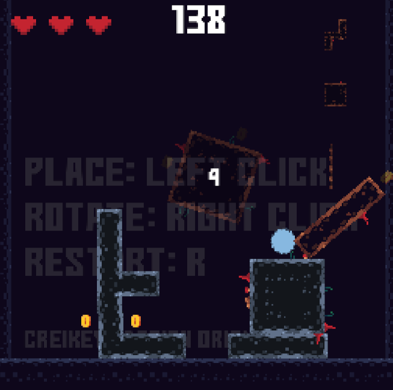

Many dozens of projects in various states of completion are missing from this list. They may be added in the future for posterity, but the direct source of truth for things I've done are on my github, itch (many games/applications are private), and youtube channel. Don't forget just asking me as well, I'm partially ears.
ASTRIS
Astris is my primary focus at the moment. The current build has proximity voice chat, a fully networked gravity/physics simulation, explosions, and more. You can find out more and play it here
I have a lot to say about this game, I talk about it extensively on my youtube channel. But in summary it is a game about what the future of humanity could be like, experientially, not literally.
Infiltrate
Infiltrate was a serious effort to design a novel online party game, which had the possibility for interesting competitive play. Players create and design a base centered around defending a diamond, infiltrate their own base to prove that it's possible, then send it. Once everybody in the game has submitted a level, you can invade anybody else's base.
While I don't think this project failed per se, it was very difficult to make good design wise. There were ~15 playtests where we talked for hours about how to improve the game, and still to me in its current state it's mediocre. Although I still think it has potential if the kinks were worked out, I'm prioritizing ASTRIS.
SkyLimit

Originally a game jam game made in a few hours to experiment with physics and game design, it was iterated on some more over the course of another 8 hours with Design Oriented to refine the concept. You can learn more about SkyLimit on its itch page here
TDM Godot Ocean
I learned shaders struggling to create an ocean for a naval strategy game that fell like many games do to focusing too much on the technology and not the design. This project specifically was me using my expertise in shaders to translate this beautiful shader to Godot, and in doing so also moving it to a new way of rendering things, improving the performance of it by nearly 300%